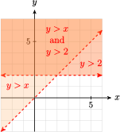

In this section, we study linear inequalities in two variables and how they arise in applications.
SubsectionGraphs of Inequalities in Two Variables
Ivana is investing in the hotel business. She has bought two hotels, and she will expand her investments when her total profit from the two hotels exceeds \(\$10,000\text{.}\) If we let \(x\) represent the profit from one hotel and let \(y\) represent the profit from the other, then Ivana will expand her investments when
\begin{equation*}
x + y \ge 10,000
\end{equation*}
Notice that the equation \(x + y = 10,000\) is not appropriate to model our situation, since Ivana will be delighted if her profits are not exactly equal to \(\$10,000\) but actually exceed that amount.
A solution to an inequality in two variables is an ordered pair of numbers that satisfies the inequality. The graph of the inequality must show all the points whose coordinates are solutions. As an example, let us graph the inequality above, \(x + y \ge 10,000\text{.}\)
Rewrite the inequality by subtracting \(x\) from both sides to get
\begin{equation*}
y \ge -x + 10,000
\end{equation*}
This inequality says that for each \(x\)-value, we must choose points with \(y\)-values greater than or equal to \(-x + 10,000\text{.}\) For example, when \(x = 2000\text{,}\) we must choose points with \(y\)-values greater than or equal to \(8000\text{.}\) Solutions for several choices of \(x\) are shown in Figure 8.62a.
Figure8.62
A more efficient way to find all the solutions of the inequality is to start with the graph of the corresponding equation
\begin{equation*}
y = -x + 10,000
\end{equation*}
The graph is a straight line, as illustrated in Figure 8.62b. Observe that any point above this line has a y-coordinate greater than \(-x + 10,000\) and hence satisfies the inequality. Thus, the graph of the inequality includes all the points on or above the line \(y = -x + 10,000\text{,}\) as shown by the shaded region in Figure 8.62b.
You can check that the shaded points are also solutions to the original inequality, \(x + y \ge 10,000\text{.}\) Consider the point \((-1000, 12,000)\text{,}\) which lies in the shaded region above the line. This pair does satisfy \(x + y \ge 10,000\text{,}\) because
(Ivana will expand her investments if her first hotel loses \(\$1000\) and her second has a profit of \(\$12,000\text{.}\)) On the other hand, the point \((5000, 4000)\) does not lie in the graph of \(x + y \ge 10,000\text{,}\) because the coordinates do not satisfy the inequality.
SubsectionLinear Inequalities
A linear inequality can be written in the form
\begin{equation*}
ax + by + c \le 0 ~~~\text{ or }~~~ ax + by + c \ge 0
\end{equation*}
The solutions consist of the line \(ax + by + c = 0\) and a half-plane on one side of that line. We shade the half-plane to show that all its points are included in the solution set. If the inequality is strict, then the graph includes only the half-plane and not the line. In that case, we use a dashed line for the graph of the equation \(ax + by + c = 0\) to show that it is not part of the solution.
To decide which side of the line to shade, we can solve the inequality for \(y\) in terms of \(x\text{.}\) If we obtain
\begin{equation*}
y \ge mx + b ~~~(\text{or }~~~y \gt mx + b)
\end{equation*}
then we shade the half-plane above the line. If the inequality is equivalent to
\begin{equation*}
y \le mx + b ~~~(\text{or }~~~y \lt mx + b)
\end{equation*}
then we shade the half-plane below the line.
Caution8.63
Be careful when isolating \(y\text{:}\) We must remember to reverse the direction of the inequality whenever we multiply or divide by a negative number. (See Algebra Skills Refresher A.2 if you would like to review solving inequalities.)
\begin{equation*}
y = \frac{4}{3}x-4
\end{equation*}
Note that the \(y\)-intercept is \(-4\) and the slope is \(\frac{4}{3}\text{.}\) (See Section 1.5 to review the slope-intercept method of graphing.) Finally, we shade the half-plane below the line. The completed graph is shown in Figure 8.65.
Figure8.65
Checkpoint8.66
Find one \(y\)-value that satisfies the inequality \(y - 3x \lt 6\) for each of the \(x\)-values in the table.
\(x\)
\(1\)
\(0\)
\(-2\)
\(y\)
\(\hphantom{blank}\)
\(\hphantom{blank}\)
\(\hphantom{blank}\)
Graph the line \(y - 3x = 6\text{.}\) Then plot your solutions from part (a) on the same grid.
Graph the solutions of the inequality \(y - 3x \lt 6\text{.}\)
A second method for graphing inequalities does not require us to solve for \(y\text{.}\) Once we have graphed the boundary line, we can decide which half-plane to shade by using a test point. The test point can be any point that is not on the boundary line itself.
Example8.67
Graph the solutions of the inequality \(3x - 2y\lt 6\text{.}\)
First, we graph the line \(3x - 2y = 6\text{,}\) as shown in Figure 8.68. We will use the intercept method. The intercepts are \((2, 0)\) and \((0, -3)\text{,}\) so we sketch the boundary line through those points.
Next, we choose a test point. Because \((0, 0)\) does not lie on the line, we choose it as our test point. We substitute the coordinates of the test point into the inequality to obtain
Because this is a true statement, \((0, 0)\) is a solution of the inequality. Since all the solutions lie on the same side of the boundary line, we shade the half-plane that contains the test point. In this example, the boundary line is a dashed line because the original inequality was strict.
Figure8.68
We can choose any point for the test point as long as it does not lie on the boundary line. We chose \((0, 0)\) in Example 2 because the coordinates are easy to substitute into the inequality. If the test point is a solution to the inequality, then the half-plane including that point should be shaded. If the test point is not a solution to the inequality, then the other half-plane should be shaded.
For example, suppose we had chosen (5, 0) as the test point in Example 8.67. When we substitute its coordinates into the inequality, we find
which is a false statement. This tells us that \((5, 0)\) is not a solution to the inequality, so the solutions must lie on the other side of the boundary line. Using (5, 0) as the test point gives us the same solutions we found in Example 8.67.
Here is a summary of our test point method for graphing inequalities.
To Graph an Inequality Using a Test Point:
Graph the corresponding equation to obtain the boundary line.
Choose a test point that does not lie on the boundary line.
Substitute the coordinates of the test point into the inequality.
If the resulting statement is true, shade the half-plane that includes the test point.
If the resulting statement is false, shade the half-plane that does not include the test point.
If the inequality is strict, make the boundary line a dashed line.
Checkpoint8.69
Graph the solutions of the inequality \(y \gt \dfrac{-3}{2}x\text{.}\)
Graph the line \(y = \dfrac{-3}{2}x\text{.}\) (Use the slope-intercept method.)
Choose a test point. (Do not choose \((0, 0)\text{!}\))
First, we graph the equation \(x = 2\text{;}\) its graph is a vertical line. Since the origin does not lie on this line, we can use it as a test point. Substitute \(0\) for \(x\) (there is no \(y\)) into the inequality to obtain
\begin{equation*}
0\ge 2
\end{equation*}
Since this is a false statement, shade the half-plane that does not contain the origin. We see in Figure 8.71 that the graph of the inequality contains all points whose \(x\)-coordinates are greater than or equal to \(2\text{.}\)
Some applications are best described by a system of two or more inequalities. The solutions to a system of inequalities include all points that are solutions to each inequality in the system. The graph of the system is the intersection of the shaded regions for each inequality in the system. For example, Figure 8.73 shows the solutions of the system
\begin{equation*}
y \gt x ~~~\text{ and }~~~ y \gt 2
\end{equation*}

Figure8.73
Example8.74
Laura is a finicky eater, and she dislikes most foods that are high in calcium. Her morning cereal satisfies some of her calcium requirements, but she needs an additional 500 milligrams of calcium, which she will get from a combination of broccoli, at 160 milligrams per serving, and zucchini, at 30 milligrams per serving. Draw a graph representing the possible combinations of broccoli and zucchini that fulfill Laura’s calcium requirements.
It makes no sense to consider negative values of \(x\) or of \(y\text{,}\) since Laura cannot eat a negative number of servings. Thus, we have two more inequalities to satisfy:
\begin{equation*}
x \ge 0 ~~~\text{ and }~~~y \ge 0
\end{equation*}
We graph all three inequalities on the same axes. The inequalities \(x\ge 0\) and \(y \ge 0\) restrict the solutions to lie in the first quadrant. The solutions common to all three inequalities are shown in Figure 8.75.
Figure8.75
Laura can choose any combination of broccoli and zucchini represented by points in the shaded region. For example, the point \((3, 1)\) is a solution to the system of inequalities, so Laura could choose to eat \(3\) servings of broccoli and \(1\) serving of zucchini.
Checkpoint8.76
Use the following steps to graph the solutions of the system
\begin{align*}
x + y \amp\le 12\\
3x - 4y \amp\le 8
\end{align*}
Graph the boundary line \(x + y = 12\text{.}\)
Lightly shade the solutions of the inequality \(x + y \le 12\text{.}\)
Graph the boundary line \(3x - 4y = 8\text{.}\)
Lightly shade the solutions of \(3x - 4y \le 8\text{.}\)
The last two inequalities, \(x\ge 0\) and \(y\ge 0\text{,}\) restrict the solutions to the first quadrant.
First, we graph the line \(x - y - 2 = 0\) and use the test point \((0, 0)\) to shade the half-plane, including the origin. Then we graph the line \(x - 2y - 6 = 0\) and again use the test point \((0, 0)\) to shade the half-plane below the line. The intersection of the shaded regions is shown in Figure 8.78.
Figure8.78
To find the coordinates of the vertices \(A\text{,}\) \(B\text{,}\) \(C\text{,}\) and \(D\text{,}\) we solve simultaneously the equations of the two lines that intersect at each vertex. Thus,
for \(A\text{,}\) we solve the system
\begin{align*}
x \amp= 0\\
y\amp =0
\end{align*}
to find \((0, 0)\)
for \(B\text{,}\) we solve the system
\begin{align*}
x \amp= 0\\
x + 2y \amp= 6
\end{align*}
to find \((0, 3)\)
for \(C\text{,}\) we solve the system
\begin{align*}
x + 2y \amp= 6\\
x -y \amp= 2
\end{align*}
to find \(\left(\dfrac{10}{3},\dfrac{4}{3} \right)\)
for \(D\text{,}\) we solve the system
\begin{align*}
y \amp= 0\\
x -y \amp= 2
\end{align*}
to find \(\left(2,0 \right)\)
The vertices are the points \((0, 0)\text{,}\) \((0, 3)\text{,}\) \(\left(\dfrac{10}{3},\dfrac{4}{3} \right)\text{,}\) and \((2, 0)\text{.}\)
Look up the definitions of new terms in the Glossary.
Half-plane
Test point
Vertices
SubsubsectionCONCEPTS
The solutions of a linear inequality in two variables consist of a half-plane on one side of the line. The line itself is not included if the inequality is strict.
Once we have graphed the boundary line, we can decide which half-plane to shade by using a test point.
To Graph an Inequality Using a Test Point:
Graph the corresponding equation to obtain the boundary line.
Choose a test point that does not lie on the boundary line.
Substitute the coordinates of the test point into the inequality.
If the resulting statement is true, shade the half-plane that includes the test point.
If the resulting statement is false, shade the half-plane that does not include the test point.
If the inequality is strict, make the boundary line a dashed line.
The solutions to a system of inequalities include all points that are solutions to each inequality in the system. The graph of the system is the intersection of the shaded regions for each inequality in the system.
To describe the solutions of a system of inequalities, it is useful to locate the vertices, or corner points, of the boundary.
SubsubsectionSTUDY QUESTIONS
The solutions of a linear inequality in two variables form what sort of set?
How can you find the boundary of the solution set?
If your test point is not a solution of the inequality, which side of the line should you shade?
How can you find the vertices of the solution set of a system of inequalities?
SubsubsectionSKILLS
Practice each skill in the Homework problems listed.
Graph the solutions of a linear inequality in two variables: #1–16
Graph the solutions of a system of inequalities: #17–36
\(\begin{aligned}
3y - x \ge 3 \hphantom{00} \\
y - 4x \ge -10\\
y - 2 \le x \hphantom{000}\\
x\ge 0, ~ y\ge 0
\end{aligned}\)
36
\(\begin{aligned}
2y + x \le 6 \\
4y \le 2x+8\\
x \le 4y+4~ \\
x\ge 0, ~ y\ge 0
\end{aligned}\)
Graph the set of solutions to each problem. Two of the inequalities in each system are \(x\ge 0\) and \(y\ge 0\text{.}\)
37
The math club is selling tickets for a show by a mathemagician. Student tickets will cost \(\$1\) and faculty tickets will cost \(\$2\text{.}\) The ticket receipts must be at least \(\$250\) to cover the fee for the performer. Write a system of three inequalities for the number of student tickets and the number of faculty tickets that must be sold, and graph the solutions.
38
The math department is having a book sale of old textbooks to raise at least \(\$300\) for scholarships. Paperback textbooks will cost \(\$2\) and the hardcover textbooks will cost \(\$5\text{.}\) Write a system of three inequalities for the number of paperback and hardback textbooks that must be sold, and graph the solutions.
39
Vassilis plans to invest at most \(\$10,000\) in two banks. One bank pays \(6\%\) annual interest and the other pays \(5\%\) annual interest. Vassilis wants at least \(\$540\) total annual interest from his two investments. Write a system of four inequalities for the amount Vassilis can invest in the two accounts, and graph the system.
40
Jeannette has \(180\) acres of farmland for growing wheat or soy. She can get a profit of \(\$36\) per acre for wheat and \(\$24\) per acre for soy. She wants to have a profit of at least \(\$5400\) from her crops. Write a system of four inequalities for the number of acres she can use for each crop, and graph the solutions.
41
Gary's pancake recipe includes corn meal and whole wheat flour. Corn meal has \(2.4\) grams of linoleic acid and \(2.5\) milligrams of niacin per cup. Whole wheat flour has \(0.8\) gram of linoleic acid and \(5\) milligrams of niacin per cup. These two ingredients should not exceed \(3\) cups total. The mixture should provide at least \(3.2\) grams of linoleic acid and at least \(10\) milligrams of niacin. Write a system of five inequalities for the amount of corn meal and the amount of whole wheat flour Gary can use, then graph the solutions.
42
Cho and his brother go into business making comic book costumes. They need \(1\) hour of cutting and \(2\) hours of sewing to make a Batman costume. They need \(2\) hours of cutting and \(1\) hour of sewing to make a Wonder Woman costume. They have available at most \(10\) hours per day for cutting and at most \(8\) hours per day for sewing. They must make at least one costume each day to stay in business. Write a system of five inequalities for the number of each type of costume Cho can make, then graph the solutions.